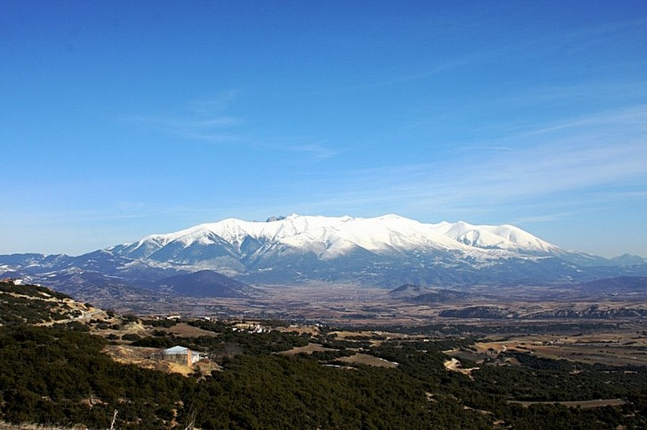
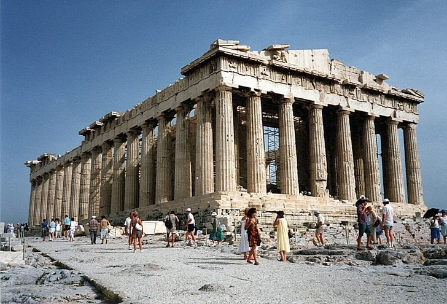
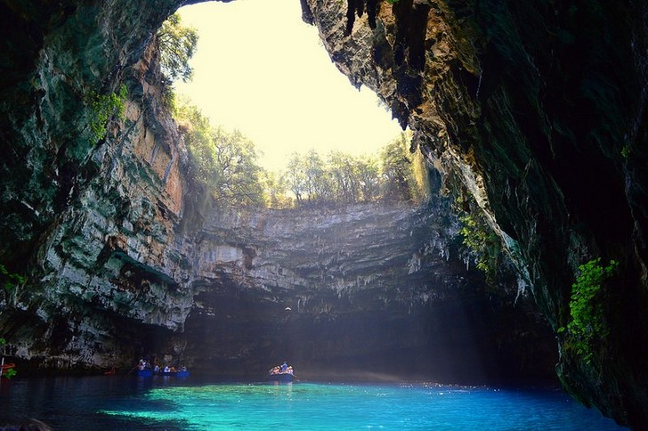
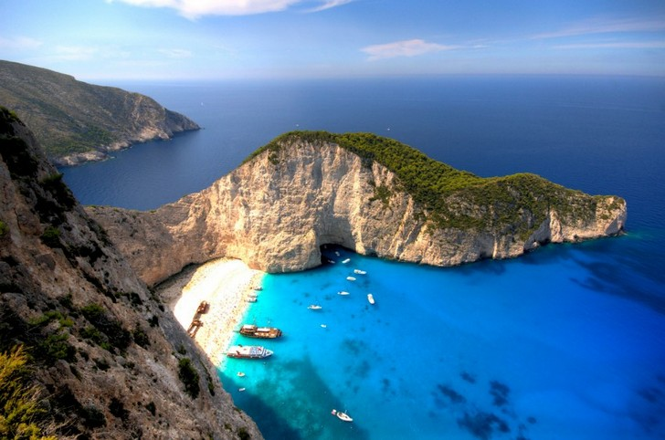
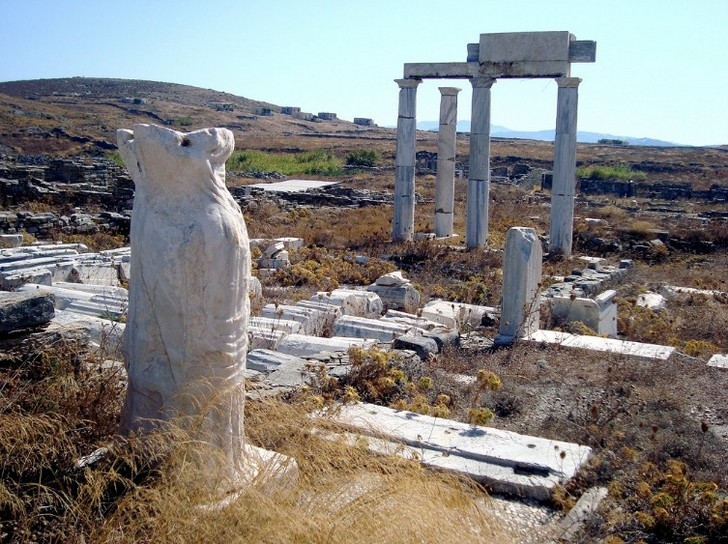
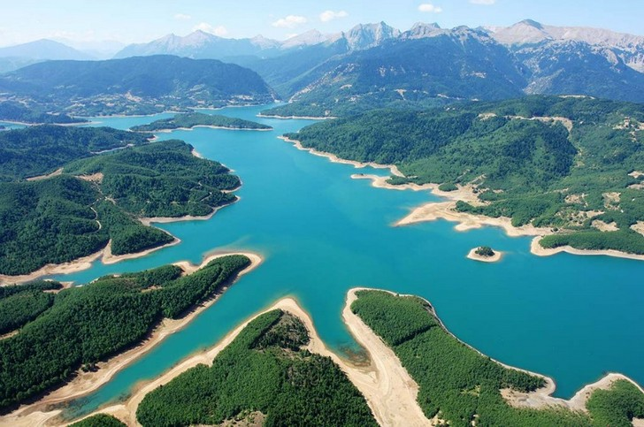
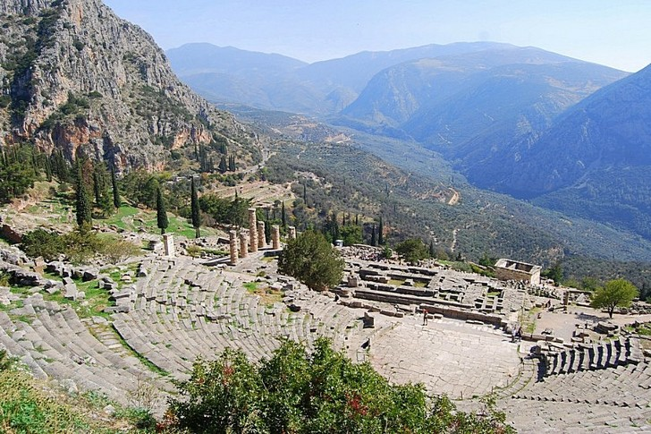
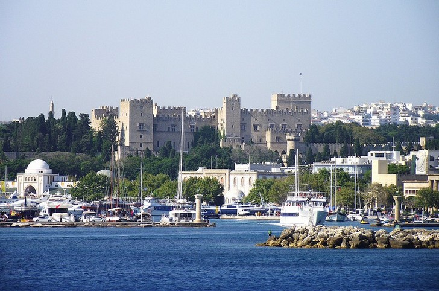

Греция
География
Греция, или (как её по сей день называют сами греки) - Эллада, расположена на юге Балканского полуострова и, соответственно, Европы, занимая восточную часть Средиземноморского бассейна. Географическое расположение Греции удивительно выгодное, поскольку она находится на стыке трех континентов (Европы, Азии и Африки), справедливо называясь «перекрестком трех континентов»: ведь не случайно здесь в Дельфах находится пуп земли, а Средиземное море называется «Месогио», то есть находящееся среди материков. Страна омывается четырьмя морями - Средиземным, Ионическим, Эгейским и Ливийским - и имеет общие сухопутные границы протяженностью в 1210 км., гранича со следующими странами: с Албанией, с Болгарией, с Турцией и с Бывшей Югославской Республикой Македонии.
История
Греция положила начало европейской цивилизации. Греческие города-государства Афины, Коринф и Спарта объединяли свои силы только тогда, когда оказывались под угрозой вторжения персов.
В V веке до н.э. Афины были политическим, экономическим, и, конечно же, культурным центром Средиземноморья. Затем главенствующую роль над греческими землями получила Спарта во главе с Александром Великим. В это время греки победили персов и распространили свое влияние на огромные территории, вплоть до Индии.
В 146 г. до н.э. Греция была завоевана Римской империей. В 395 г. н.э., после распада Римской империи, была образована Византия (официальное название – Восточная Римская империя), столицей которой стал Константинополь (современный Стамбул).
В 1453 году Византийская империя была ликвидирована, и территория современной Греции попала под власть Османской империи. Следующие 350 лет Греция входила в состав турецкой Османской империи.
В результате освободительной войны 1821-1829 годов Греция наконец-то получила независимость. В 1833 голу королем Греции стал Отто из Баварии. Монархия в Греции (с 1863 года греками правила датская королевская семья) просуществовала до 1973 года.
После Второй мировой войны Греция погрузилась в гражданскую войну, пока в 1954 году не победили правые монархисты. С 1967 по 1974 года Грецией управляли т.н. «черные полковники».
В 1981 году, после многолетних консультаций, Греция стала членом ЕС.
Достопримечательности
Гора ОлимпХотите почувствовать себя богом, Зевсом-громовержцем? Тогда обязательно отправляйтесь на гору Олимп, чтобы посмотреть на весь мир свысока. Восхождение потребует определенных физических усилий, хотя по пути оборудованы кемпинги и площадки для отдыха уставших туристов. Можно облегчить подъем, проехав первую часть пути на такси. |
 |
ПарфенонВы точно видели это античное сооружение, если не на фотографиях, то в облике многочисленных зданий, которые стали его копиями. Эти стройные колонны не спутаешь ни с чем! Парфенон, безусловно, сейчас не может похвастаться былым величием, однако, до сих пор выглядит как яркий образец античной архитектуры. Работы по его реконструкции продолжаются. |
 |
Пещерное озеро МелиссаниПотрясающе красивое место. Представьте себе зеркально чистую поверхность воды, живописные скалы по сторонам и яркое солнце, которое пробивается в пещеру благодаря разрушенному землетрясением куполу. Прогулки на лодке и купание в пещерном озере Мелиссани точно станут одним из самых ярких моментов путешествия по Греции. |
 |
Пляж НавагиоПляж Навагио очень часто изображают на рекламных брошюрах туристических операторов — место невероятно красивое и притягательное. Его часто называют «пляжем кораблекрушений», так как здесь до сих пор стоит потерпевшее крушение судно «Панайотис», принадлежавшее контрабандистам. Примечательно, что по суше добраться на пляж Навагио, окруженный со всех сторон неприступными скалами, нельзя. |
 |
Остров ДелосЭтот практически необитаемый остров в Эгейском море упоминается во многих мифах и легендах. На Делосе сохранились руины храмов Артемиды и Аполлона, а также другие следы древних цивилизаций. Кроме того, представляют интерес Дом дельфинов, терраса львов, сохранившаяся рыночная площадь, а также дорический храм Исиды. |
 |
Озеро ПластираЭто озеро за последнее время стало популярным туристическим местом, несмотря на то, что находится на высоте 800 метров над уровнем моря. Озеро Пластира не только служит источником пресной воды для окружающих населенных пунктов, но и украшает эту местность. Чистая голубая вода в окружении зеленых берегов выглядит особенно привлекательно. |
 |
Древнегреческий город ДельфыВ античные времена этот город являлся центром общественной и религиозной жизни страны, да и сегодня его руины производят сильное впечатление. Остается только ходить и удивляться, насколько искусны были древнегреческие строители, создававшие такую красоту, к тому же простоявшую несколько тысячелетий! |
 |
Средневековый город Родос/Раньше в этом городе-порте стояло одно из семи чудес света — статуя Колосса Родосского. А теперь туристы едут сюда, чтобы увидеть Родосскую крепость, которая в средние века служила надежным пристанищем рыцарям-госпитальерам. Крепость отлично сохранилась, выглядит очень внушительно и мощно. Можно посмотреть также руины храма Афродиты, ветряные мельницы и ряд других интересных объектов. |
 |
Интересные факты
- Ежегодно Грецию посещают более 17 миллионов иностранцев, а туризм является ведущей отраслью местной экономики и составляет примерно 16% ВВП страны.
- В столице государства проживает свыше 40% населения.
- Более 250 дней в году в Греции ясные. Такое природное преимущество дает возможность повсеместно использовать солнечные батареи для производства дешевой электроэнергии.
- Греки довольно бережно относятся к экологии, поэтому практически на каждом острове есть ветряные электростанции.
- В стране нет ни одной АЭС, но существует несколько ТЭЦ. Они работают на угле, который добывают в северной части карьерным способом.
- Метрополитен существует только в Афинах (в Салониках ведется строительство). Он небольшой по размерам и работает с 5 утра до полуночи. Многие станции метро украшены древними находками, найденными при его постройке.
- Греция вырабатывает примерно 7% мрамора из мирового объема его добычи.
- В страны Европы Греция поставляет текстильные и швейные изделия, сельскохозяйственные продукты.
- Расстояние из любой точки Греции до берега моря не превышает 137 км.
- Территория государства омывается пятью морями: Эгейским, Фракийским, Ионическим, Средиземным и Критским.
- На острове Родос находится знаменитая долина бабочек, куда летом слетается много их видов. Вода в местных водоемах настолько чистая, что на дне можно увидеть крабов.
- На заболоченных территориях страны зимуют около ста тысяч птиц из Азии и северной Европы.
- Греки просыпаются в 5-6 часов утра, а ложатся спать после 23 часов. Недостаток ночного сна они восполняют во время дневной сиесты (с двух до четырех часов дня).
- По продолжительности жизни Греция занимает 26 место в мире. Средняя ее длительность для женщин равна 82 годам, а для мужчин - 77.
- Местные жители редко оказываются в домах престарелых. Бабушки и дедушки обычно до самой смерти живут в семьях своих детей. До вступления в брак большинство молодых людей живут с родителями.